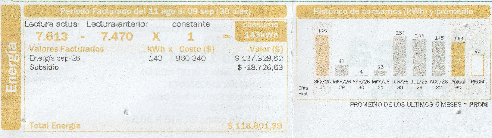

Soporte de mi factura de energía
En el periodo facturado del 11 de agosto al 09 de septiembre de 2026 (30 días), la lectura pasó de 7.470 a 7.613, registrando un consumo de 143 kWh a un costo unitario de $960,34 COP/kWh.

Historial de consumo de la factura
La siguiente tabla muestra los meses reportados en el histórico de la factura, los días facturados, los kWh consumidos y el valor pagado (aplicando el costo unitario de referencia de la factura de $960,34 COP/kWh y mostrando el total con subsidio en el mes actual):
| Mes / Periodo | Días facturados | Consumo (kWh) | Valor pagado / facturado (COP) |
|---|---|---|---|
| Septiembre 2025 (SEP/25) | 31 | 172 | $165.178 |
| Marzo 2026 (MAR/26) | 29 | 47 | $45.136 |
| Abril 2026 (ABR/26) | 30 | 4 | $3.841 |
| Mayo 2026 (MAY/26) | 31 | 23 | $22.088 |
| Junio 2026 (JUN/26) | 30 | 167 | $160.377 |
| Julio 2026 (JUL/26) | 29 | 155 | $148.853 |
| Agosto 2026 (AGO/26) | 32 | 145 | $139.249 |
| Septiembre 2026 (Actual) Factura actual | 30 | 143 | $137.328,62 (Con subsidio de -$18.726,63: $118.601,99) |
| Promedio últimos 6 meses (PROM en factura) | 90 | $86.431 | |
Comparación: proyección mensual de equipos.html vs. factura real
Proyección mensual de los 4 equipos equipos.html
Consumo semanal medido: 12,58 kWh ($12.076 COP).
En 4 semanas (28 días): 50,32 kWh ($48.304 COP).
En 30 días (× 4,2857 semanas): 53,91 kWh ($51.754 COP).
Consumo real en el medidor Factura sep-26
Consumo facturado en 30 días: 143 kWh.
Valor energía sin subsidio: $137.328,62 COP.
Diferencia frente a la proyección: faltan 89,09 kWh (el 62,3 % del recibo).
¿Por qué hay una diferencia de casi 89 kWh al mes?
Los cuatro equipos registrados en equipos.html (aspiradora, freidora de aire, amplificador y televisor) proyectan entre 50,32 kWh y 53,91 kWh al mes, es decir, apenas el 37,7 % de los 143 kWh que cobró la factura de septiembre. Los otros 89 a 92 kWh mensuales corresponden a los electrodomésticos de uso permanente o diario que no están en esa tabla inicial: principalmente la nevera (que permanece conectada las 24 horas del día y consume entre 35 y 45 kWh al mes), el computador de escritorio, la lavadora, la iluminación LED de las habitaciones, los routers de internet (encendido 24/7) y la carga diaria de computadores portátiles y celulares.
Recomendaciones de ahorro para nuestra familia
Basándonos en los datos reales de nuestros equipos y en la evolución de la factura (que bajó de 167 kWh en junio a 143 kWh en septiembre, pero sigue por encima del promedio de 90 kWh), acordamos estas acciones en casa:
- Reducir el uso de la freidora de aire (1100 W) de 7 a 4 horas por semana: cocinar varios alimentos en una misma tanda nos ahorrará 3,3 kWh semanales (unos 14,1 kWh al mes, equivalentes a $13.540 COP mensuales).
- Mantener la tendencia de descenso hacia la meta de 90 kWh: desde junio (167 kWh) hemos logrado bajar a julio (155 kWh), agosto (145 kWh) y septiembre (143 kWh). Si recortamos otros 15 a 20 kWh mensuales cuidando la apertura de la nevera y el tiempo de encendido sin uso del computador de escritorio, evitaremos cualquier recargo por superar el tope del 110 % de la Resolución CREG 101 120 de 2026.
- Usar regleta con interruptor para el televisor (115 W) y el amplificador (19 W): apagar la regleta por completo al dormir y reducir 1 hora diaria de televisor los fines de semana nos permitirá ahorrar cerca de 1,5 kWh adicionales al mes y eliminar el consumo en espera (standby).
- Concentrar el uso de la aspiradora (1300 W) con filtro limpio: mantener el depósito de polvo despejado hace que el motor trabaje con mayor eficiencia y complete el aseo del fin de semana en menos de 45 minutos.